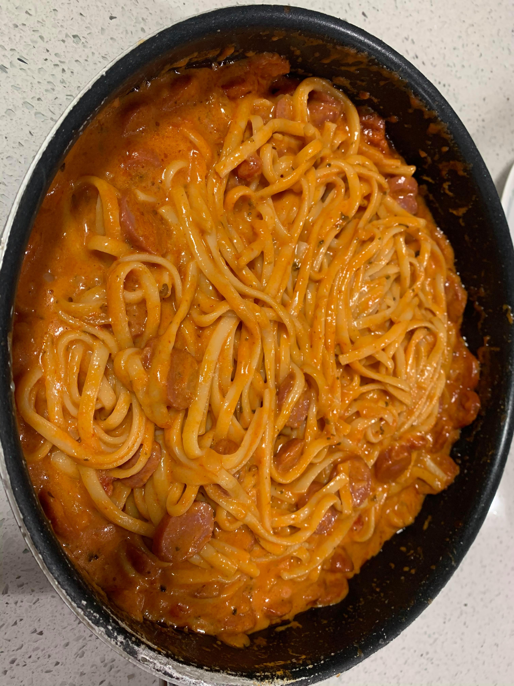

Filipino Spaghetti

Ingredients:
- Spaghetti noodles
- 1 Onion, diced
- 4 tbsp Olive oil
- 2 cloves Garlic, minced
- 1 lb Hotdogs or Ground beef (preferably Filipino hotdogs)
- Pasta sauce
- 4 slices American Cheese
- 4 oz Condensed milk
- 1 tbsp Honey
Instructions:
- Boil water and cook the spaghetti noodles until they are ready.
- Dice the onion and mince the garlic. Fry the onion in the olive oil over medium heat.
- Once the onion becomes translucent, add in the minced garlic. Fry for about a minute or until fragrant.
- Add in the hotdogs or ground beef and fry until browned completely.
- Add the pasta sauce and stir until heated through.
- Mix in the cheese, condensed milk, and honey. Stir until completely incorporated and heated through.